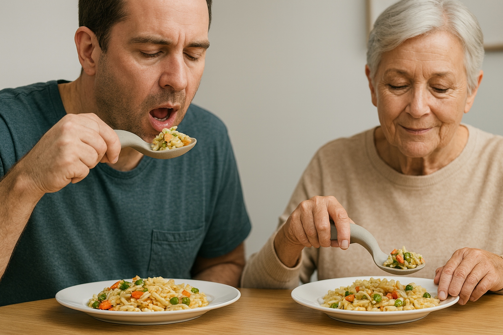
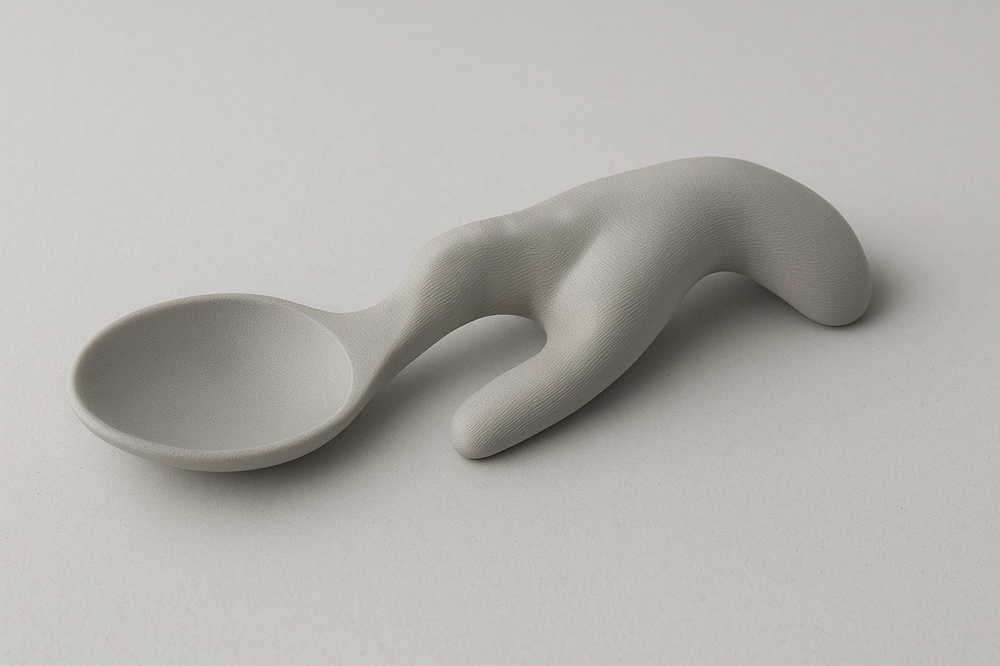
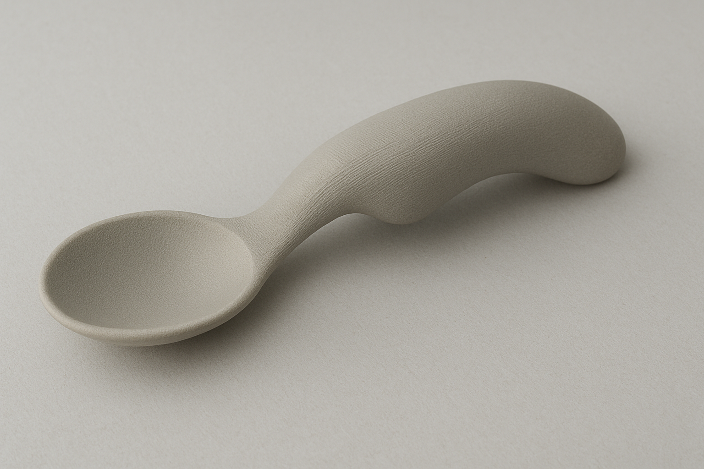

Mehr Stabilität. Mehr Kontrolle. Mehr Lebensqualität.
Warum stabili?
Der individuell gefertigte stabili-Löffel wurde speziell für Menschen entwickelt, deren Handkraft, Motorik und Sensibilität eingeschränkt ist.
Mit modernster 3D-Technologie wird jeder Griff exakt an die Handform angepasst. Das Ergebnis: Ein sicherer Halt, weniger Verschütten und ein deutlich entspannteres Esserlebnis.
Vorteile
Stabile Handhaltung – das integrierte Stützelement stabilisiert das Handgewölbe und verhindert das Einknicken
Sicherer, rutschfester Griff – ergonomische Form erleichtert das Greifen auch bei schwacher Kraft
Der stabili-Löffel eignet sich besonders für Menschen mit neurologischen Erkrankungen wie z. B. Schlaganfall oder Gehirnblutung.
Mögliche Einschränkungen:
Geschwächte Handkraft
Handfehlstellungen
Reduzierte Sensibilität
Störungen der Feinmotorik
Individuell. Hygienisch. Alltagstauglich.
Foto der Hand für perfekte Passform
In verschiedenen Farben verfügbar
Leichte Reinigung
Kostenfreie Anpassung
Zwei Jahre Garantie
stabili in Aktion

Produktkonfigurator
1. Löffeltyp auswählen

Typ A – ergonomischer Stützgriff
Auswählen

Typ B – kompakter Griff
Auswählen
2. Farbe auswählen
Keine Farbe gewählt
3. Foto der Hand hochladen
4. Vorschau Ihres Löffels
Jetzt Konfiguration abschicken
Team
Jana Brütting, Elena Hildebrandt, Johanna Nagel, Julia Kraus
Unser interdisziplinäres Team aus Therapeutinnen,
Gesundheitswissenschaftlerinnen und Marketingexpertinnen arbeitet gemeinsam daran,
funktionale und ästhetische Alltagshilfen zu entwickeln.